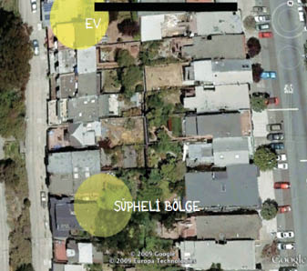

14
Wendy önümüzdeki haritaya baktı. Gönlümü yapmak için uzun uzun, dikkatle baktı.
“Üzgünüm tatlım,” dedi.
“Hayır!” diye sızlandım. “Bir yanlışlık olmalı.”
Yanlışlık falan yoktu.
Tibby Antarktika’ya, Pennysylvania’daki büyük bir şehre ya da Aborijinlerin arasına gitmemişti.
Hayır.
Harita, Tibby’nin sokağın hemen aşağısında biten izlerini açık bir biçimde gösteriyordu. Bir daha, bir daha, bir daha. On ev ötede.
On ev ötede!
Veremli gibi hışırtılı bir fısıltıyla, “Anlamıyorum,” dedim. “Korkunç bir şey bu.”

Wendy, “İstediğin buydu,” dedi. “Nereye gittiğini öğrenmek istemiştin.”
Evet. Ama aynı zamanda hayır.9
“Üstelik çok yakındaymış. Rahatlatıcı bir şey değil mi?” Wendy bilgisayardan uzaklaşarak bana doğru eğildi, sabırlı ve şefkatli olacağını ama bunu ancak bir süre devam ettireceğini göstermek için başını yan yatırıp gözlerini kocaman açtı.
“Ama her gece onu çağırdığımı duydu,” dedim miyavlar gibi.
Wendy hâlâ anlamıyordu. İnat ettim.
“Sana telefon ettiğimi, ekranda numaramı gördüğünü ama görmezden gelip açmadığını düşün. Ona benziyor.”
“Şey…” Wendy bakışlarını kaçırdı. Bazen ekranda numaramı görüp görmezden geliyordu.
“Tamam, diyelim ki seni aradım, numaramı gördün ve görmezden gelip açmadın. Ben de mesaj yazdım, bir trenin altına sıkıştığımı, sol taraftaki tekerin kolumun üstünde olduğunu ve tıbbi yardıma ihtiyaç duyduğumu yazdım, ama sen hâlâ telefonu açmıyorsun.”
“Öyle mi?” dedi Wendy. “Durum buna mı benziyor yani?”
Evet, benziyordu ya. Veya belki de bir canavar kocaman, tüylü elini göğüs kafesime sokup aort damarımı bükmüş, kalbimi yerinden çıkarıp yere atarak üstünde tepinmişti. Belki de durum buna benziyordu.
9 Özel dedektifin el kitabı: Müşteri ortaya çıkabilecek nahoş, küçük düşürücü ya da yıkıcı bilgileri duymaya gönüllü değilse ya da bunlarla baş edebilecek gibi görünmüyorsa vakayı üstlenmeyin.